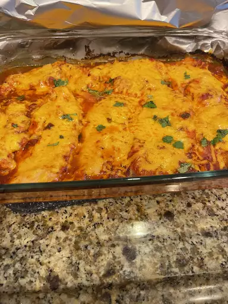

Salsa Chicken

"This salsa chicken recipe is very easy and quick! Someone gave me this recipe a few years back, and it has become a household favorite. Depending on your taste, you can use mild, medium, or hot salsa. I usually serve it with Spanish rice and Mexican-style canned corn."
Ingredients
- 4 skinless, boneless chicken breast halves
- 4 teaspoons taco seasoning mix
- 1 cup salsa
- 1 cup shredded Cheddar cheese
- 2 tablespoons sour cream (Optional)
Steps
- Preheat the oven to 375 degrees F (190 degrees C). Lightly grease a 9x13-inch baking dish.
- Place chicken breasts in the prepared dish. Sprinkle seasoning mix on both sides of chicken breasts; pour salsa on top.
- Bake in the preheated oven until chicken is tender and juicy and the juices run clear, 25 to 35 minutes.
- Sprinkle chicken evenly with cheese. Continue baking until cheese is melted and bubbly, 3 to 5 minutes more. Top with sour cream and serve.
Back